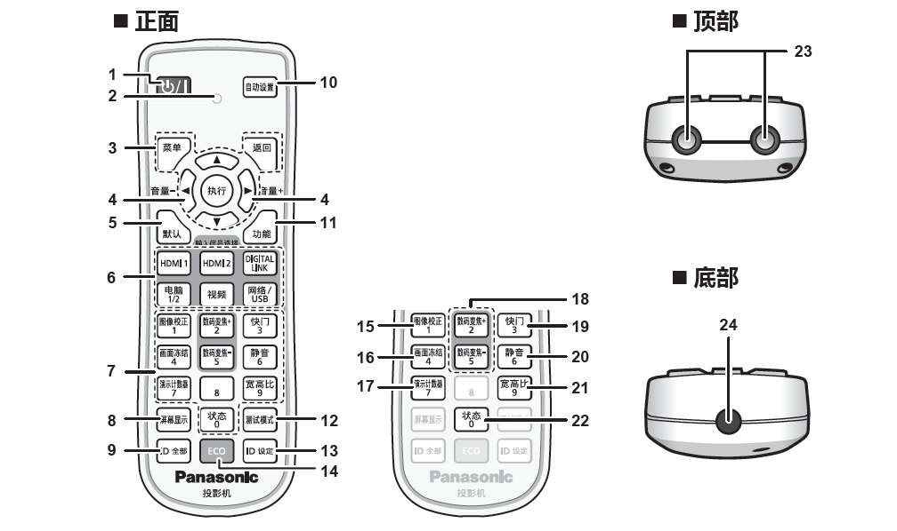
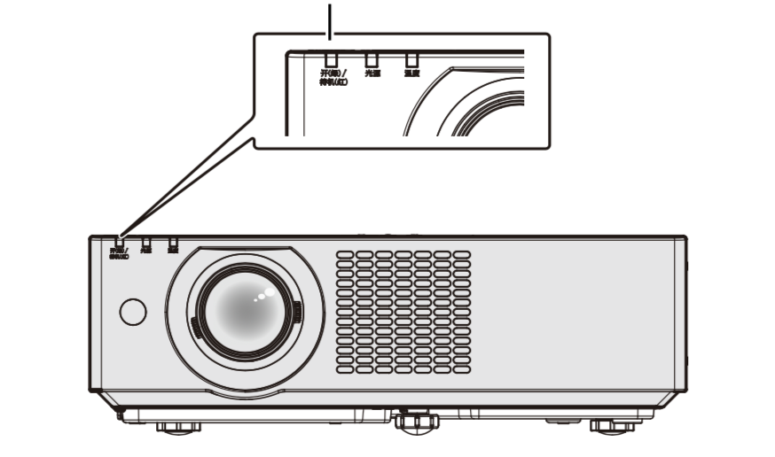
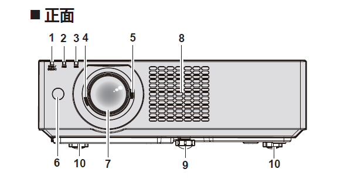
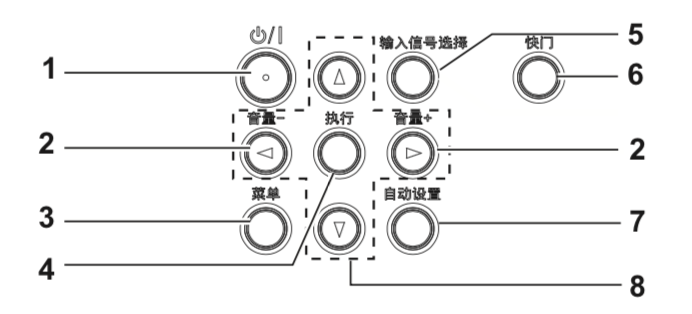
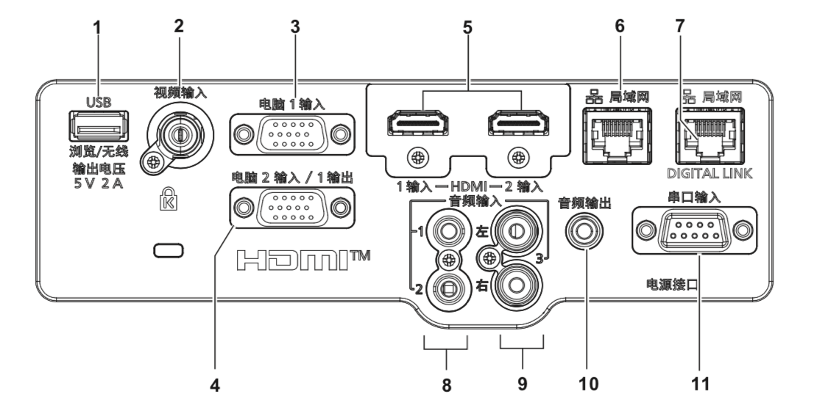

一、产品介绍¶
I. 产品用途¶
本产品用于将视频设备与电脑的静态/动态图像信号投影到屏幕上。
Ⅱ. 遥控器¶
Note
下方展示和介绍的按钮是按照使用频率进行排序，不是按照数字号码 顺序排序。
{kind=link}
2. 遥控指示灯¶
如果按遥控器上的任何按钮，指示灯会闪烁。
{kind=link}
4. <音量->/<音量+> 按钮¶
调整内置扬声器或音频输出的音量。
6. 输入信号选择(<HDMI1>、<HDMI2>、<DIGITALLINK>、<电脑1/2>、<视频>、<网络/ USB>) 按钮¶
切换输入信号。
8. <屏幕显示> 按钮¶
打开（显示）/ 关闭（隐藏）屏幕显示功能。
10. <自动设置> 按钮¶
在投影图像期间自动调整图像显示位置。
15. <图像校正> 按钮¶
校正投影画面中的各种失真。
18. <数码变焦+>/<数码变焦-> 按钮¶
放大或缩小图像。
19. <快门> 按钮¶
用于暂时关闭图像和音频。
20. <静音> 按钮¶
用于暂时关闭音频。
Ⅲ. 电源指示灯¶
电源指示灯用来显示电源状态。
指示灯状态：
熄灭
电源线未连接。
红色
点亮：
电源关闭/待机模式。 按电源按钮将开始投影。
闪烁：
电源关闭/待机模式。 按电源按钮将开始投影。投影机进入高功耗状态。
绿色
点亮：
投影机正在投影。
闪烁：
根据 [ 电源控制 ] 的设置，光源关闭。
橙色
点亮：
投影机正在冷却。 稍后电源关闭。(进入待机模式)
Ⅳ. 机身部件¶
1）前端¶
本部分介绍了投影机机身正面的部件
电源指示灯
指示电源状态。
绿色代表电源开启，红色代表待机状态
光源指示灯
指示光源状态。
温度指示灯
指示内部温度状态。
聚焦调节杆
调整焦距
变焦调节杆
调整变焦
遥控信号接收器
投影镜头
进气口
前可调支脚
调节投影角度。
后可调支脚
调节投影角度。
3）控制面板¶
本部分介绍了控制面板上面各个按钮的作用。
1. 电源按钮 将投影机设置为关闭状态(待机模式)。
当电源设置为关闭状态(待机模式)时也可开启投影机。
<音量->按钮/<音量+>按钮
调整内置声器和音频输出的音量。
<菜单>按钮
显示或隐藏主菜单。
显示子菜单时，会返回到前一个菜单。
<执行>按钮
确定并执行菜单屏幕中的项目。
<输入信号选择>按钮
切换输入信号进行投影。
<快门>按钮
用于暂时关闭图像和音频。
<自动设置>按钮
投影图像时使用自动调整功能自动调整图像显示的位置
4) 连接端子¶
端子是一种信号接口。本部分介绍了用来输入输出不同信号的端子。
< USB(浏览 / 无线 / 输出电压)>端子
使用 Memory Viewer 功能时，将 USB 存储器直接插入该端子。
当使用无线局域网功能时，请将选配的无线传输模块(型号 : AJ-WM50MC)直接插入此端子。
此外，该端子还可用于供电
<视频输入>端子
这是视频信号输入端子。
3.<电脑1输入>端子
这是 RGB 信号或 YCBCR/YPBPR 信号输入端子。
<电脑2输入/1输出>端子
这是 RGB 信号或 YCBCR/YPBPR 信号输入端子。
或将 <电脑 1 输入 > 端子输入的信号输出到外接设备。
<HDMI1输入端子/HDMI2输入>端子
这是 HDMI 信号输入端子。
<局域网>端子
这是用于连接网络的局域网端子。
此端子也支持从图像传输应用软件进行图像传输。
<DIGITAL LINK / 局域网 >端子
(不适用于 PT-BMZ40C 和 PT-BMX50C)
该端子用于连接输出视频和音频信号的设备。此外，这是用于连接网络的局域网端子。
<音频输入1端子/音频输入2>端子
这是音频信号输入端子。
<音频输入2>端子
这是音频信号输入端子。
左侧输入<左>和右侧输入<右>用于<音频输入 3>端子。
<音频输出>端子
这是投影机输入的音频信号的输出端子。
<音频输出>端子
这是 RS-232C兼容端子，可通过连接电脑从外部控制投影机。